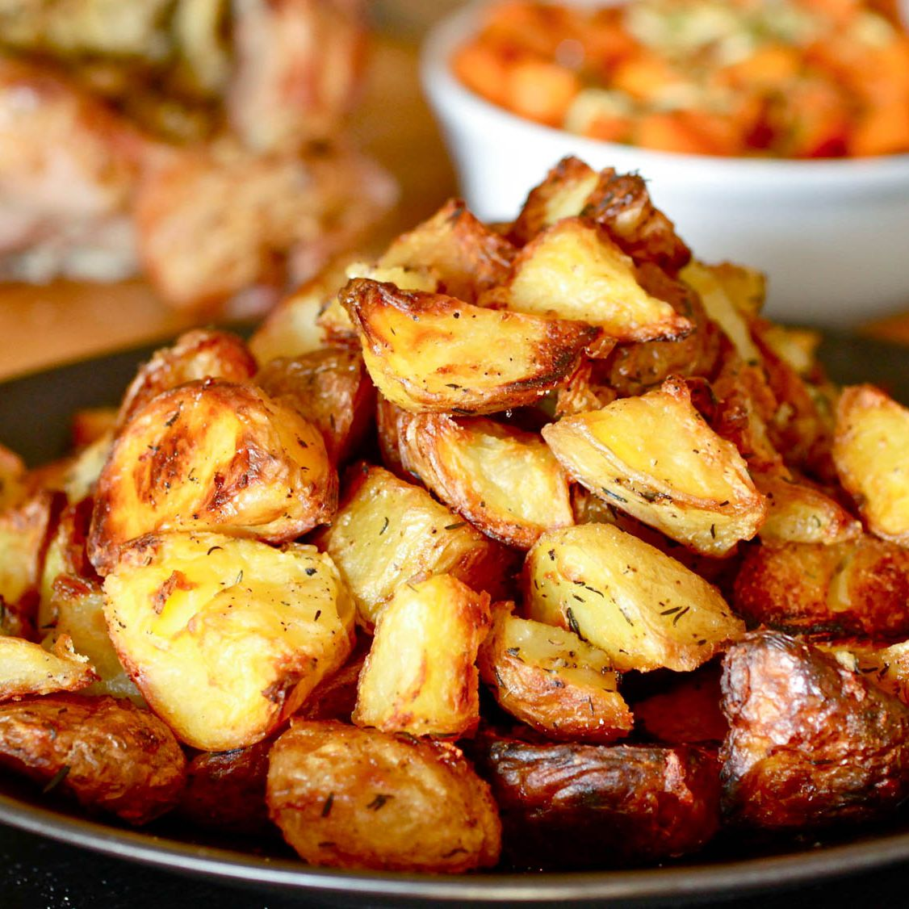

HOME
Oven Potatoes

A nice heap of freshly baked potatoes to go along with your steak.
This is a simple recipe of how to do some crispy oven potatoes to go along any dish of your chouse.
It will only take about 40-60 Minutes so make sure to do it before you start anything else!
Ingredients
- Washed Potatoes
- Butter
- Salt and Pepper
- Splash of Oil
Steps
- Heat the oven to 200 degrees Celsius
- Peel and cut the potatoes into quarters (depending on their size)
- Place them on a lined baking tray and coat with a splash of oil and salt and pepper
Make sure to mix them well
- Flatten them and put tiny peaces of butter throughout the tray
- Place in the oven and set a timer for 40 minutes
- (Optional)Once done, take some of the potatoes and toss them in a pan you used to cook the steak with
To take it a step further you can also put some of the Garlic Infused butter from the Steak recipe we did before
Simple as that! Doesn't get much better when it comes to side dishes. Enjoy!